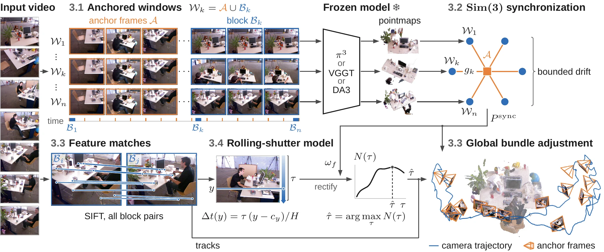
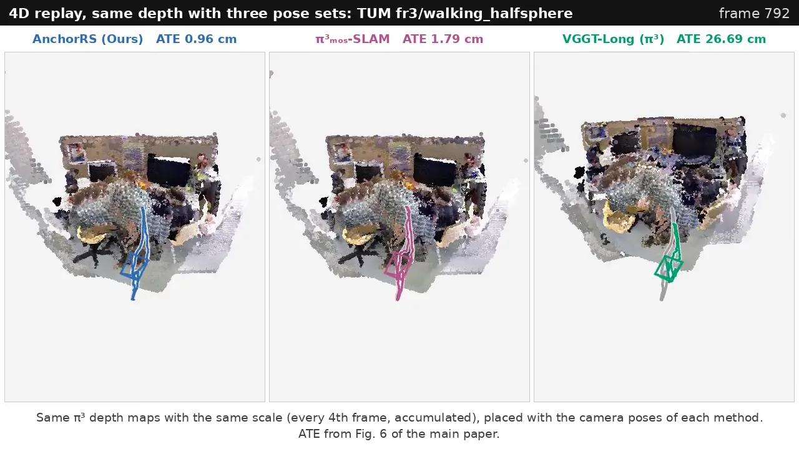

Abstract
Feed-forward 3D models predict accurate camera poses in one forward pass, but long videos must be split into windows. Most pipelines chain windows through their overlap, so alignment errors accumulate. The models also assume a global shutter, although rolling-shutter cameras are common, as in the TUM RGB-D and Bonn datasets. We present AnchorRS, a training-free offline method that estimates monocular camera trajectories by aligning windows of a feed-forward 3D model with similarity transforms (Sim(3) synchronization). We show that, if overlapping windows form a graph with independent noise on its edges, their mean drift variance is proportional to the graph's mean effective resistance, with noise variances as resistances. This variance grows linearly along a chain, like resistors in series. Sharing co-visible anchor frames across all windows keeps it bounded at no extra inference cost. A global bundle adjustment on a CPU then refines all poses with matches between all window pairs and a rolling-shutter model whose readout time is estimated directly from the video. With π3 windows, AnchorRS has a mean absolute trajectory error of 0.93 cm and 1.38 cm on four dynamic TUM and eight Bonn sequences, more than a third below the best compared methods (1.50 cm and 2.11 cm). Without the rolling-shutter model, the error is 1.53 cm and 2.13 cm. On the rolling-shutter camera of the TUM rolling-shutter dataset, modelling the shutter reduces the error from 6.70 cm to 1.23 cm. AnchorRS lets existing feed-forward 3D models recover accurate camera trajectories from long rolling-shutter videos, without retraining or shutter calibration.
Method

Results
Camera trajectories
Window count
| Method | 2 windows | 12 windows | Growth |
|---|---|---|---|
| Chained, overlap 16 | 1.07 cm | 2.82 cm | 2.6× |
| 16 anchor frames | 1.06 cm | 1.86 cm | 1.8× |
From 2 to 12 windows on five TUM sequences.
TUM and Bonn
| Method | TUM, ATE (cm) | Bonn, ATE (cm) |
|---|---|---|
| AnchorRS with τ = 0 (global-shutter model) | 1.53 | 2.13 |
| AnchorRS, π3 windows | 0.93 | 1.38 |
| AnchorRS, DA3 windows | 0.94 | 1.43 |
| Best published | 1.50 (SCOUT-SLAM) | 2.11 (FLoTS-SLAM) |
| π3mos-SLAM | 2.22 | 2.75 |
| MASt3R-SLAM, calibrated | 2.28 | 2.36 |
| LASER (π3) | 3.96 | 5.33 |
| VGGT-SLAM 2.0 | 6.96 | 5.74 |
| VGGT-Long (π3) | 12.78 | 12.11 |
With π3 windows, AnchorRS has lower error than the best published result on 8 of the 12 sequences, equal on 3 and higher on Bonn Moving. Errors are ATE RMSE in cm.
Rolling-shutter camera
| Stage | ATE |
|---|---|
| After synchronization, before bundle adjustment | 4.87 cm |
| Bundle adjustment with τ = 0 | 6.70 cm |
| Bundle adjustment with the rolling-shutter model | 1.23 cm |
TUM rolling-shutter camera, ten sequences.
4D replay

Drag to turn the view.
BibTeX
@article{lee2026anchorrs,
title = {AnchorRS: Rolling-Shutter-Aware Camera Trajectories
from Feed-Forward 3D Models},
author = {Lee, Chi-Wei and Chang, Yi-Chun and Chiang, Cheng-Han
and Chen, An-Kai and Kuo, Po-Chih},
journal = {arXiv preprint},
year = {2026}
}